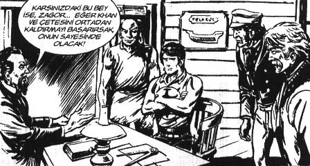

– Ne yaptın ödevi, tamamladın mı kızım?
– Babacığım bak ben sınıf birincisiyim. Bana hiç “Ödevini tamamladın mı?” diye sormana gerek yok.
– Ne bileyim, ilgilenmedim olmasın diye.
Baba kız, Nisan’ın odasında biraz bakıştılar.
– Üzgünsün değil mi bu şeflik meselesine?
– ...
– Boş ver. Sen bizim evin şefisin.
– Pek sayılmaz aslında. Farkındaysan evde de pek şeflik kalmadı.
– ...
– Aslında üzüntüm şu 860 YTL maaş. Bunun 350’si kira, 50’si aidat. Sonra yakıt, yemek masrafı, şu bu derken, sana doğru dürüst kıyafet bile alamıyoruz.
– Baba sen 14 yıldır aynı kıyafetleri giyiyorsun. Ne önemi var?
– Ne bileyim. Arkadaşların Nike, Converse, Adidaslarla geziyorlar, biz sana yeni alsak pazardan alıyoruz. Sana şöyle övünülecek markalı bir şey alamadım.
– Baba arkadaşlarımın 130 dolara aldıkları ayakkabının Nike’a maliyeti 5-8 dolar arası. Yani 5 dolara alıp 100 dolara bize satıyorlar. Açıkçası enayi yerine konmak istemem. Filipinler’in Cavite bölgesinde, saati 8 sente çalışan benim yaşımdaki sigortasız çocuklar o ayakkabıları yapıyor. Çocuk 10 saat çalışırsa 1 YTL kazanıyor. Çok kötü koşullarda çalışıyorlar. Açıkçası giyerken onlara üzülürüm. “Fast Food”lardan aldığımız patates kızartması, maliyetinin 1371 kat fazlasına satılıyor ve yemin ederim, annemin patates kızartmalarının onda biri lezzetinde değiller.
– Sen bunları nereden öğreniyorsun Allah aşkına?
– Kitaplardan baba.
– “Kişisel gelişim” mi? Bizim bütün bakanlık “kişisel gelişim” kitabı okuyor.
– Hayır, üç tane kişisel gelişim okudum, baktım hepsi birbirinin aynı. Üç tane iyi, üçten fazlası bayıyor. Hepsi aynı terane.
– “Terane”yi nereden öğrendin?
– Senden baba.
Kıkırdadılar.
– Bu ne, araba kitabı mı?
– Hayır, kişisel gelişim romanı.
Hıdır kitabı elinde şöyle bir evirdi çevirdi. Ferrari’sini Satan Bilge.
– Bunun ikinci eli de pek para etmez keşke satmasaymış güzelim aracı.
Gülüştüler.
– Yaa Ferrarili falan. Okusak mı?
– Olur baba, arkadaşım Lâl’in. Sen oku. Ben ona veririm.
– Sen okudun mu?
– 30. sayfada bıraktım.
– Tabii araçtan anlamıyorsun.
Kıkırdadılar.
Julian, [...] gerçekten kendisini her şeyi ama her şeyi başarabilirmiş ve hepimizin içinde bulunduğunu öğrendiği sonsuz potansiyeli açığa çıkarmış gibi hissediyordu.[6]
